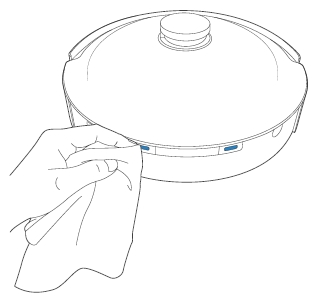

清理其他部件
清理传感器镜片
清理TrueMapping激光扫描模块

注意：请用干净的软布擦拭传感器镜片和TrueMapping激光扫描模块，不要用洗剂、洗衣液、喷雾器。清理充电极片
清理下视感应器
清理缓冲防撞板
注意：清理下视感应器和缓冲防撞板时请使用干抹布。请勿使用湿抹布，以防进水造成损坏。

温馨提示：充电极片内部包含敏感的电子元件，清理时请使用干抹布，请勿使用湿抹布以防进水造成损坏。
清理驱动轮
清理万向轮